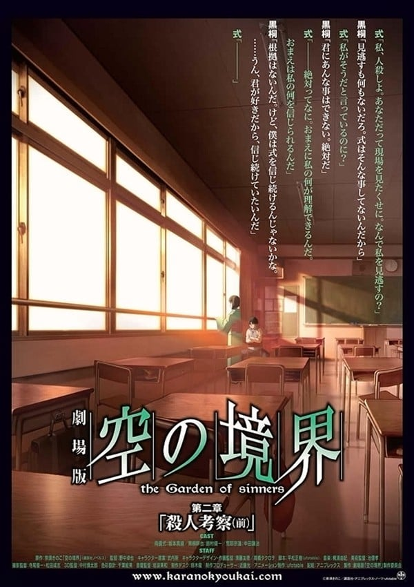
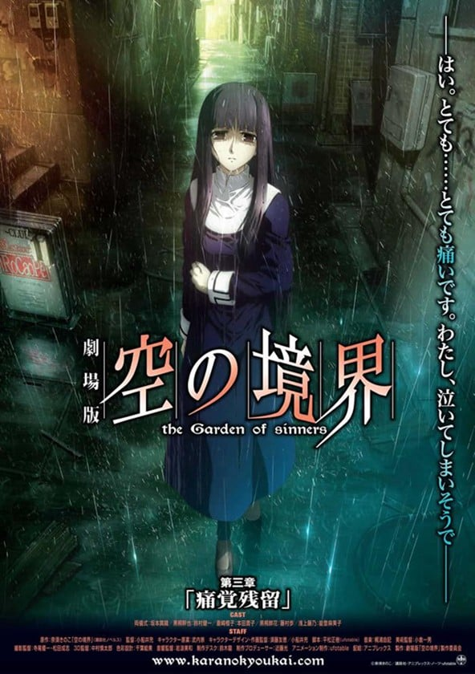
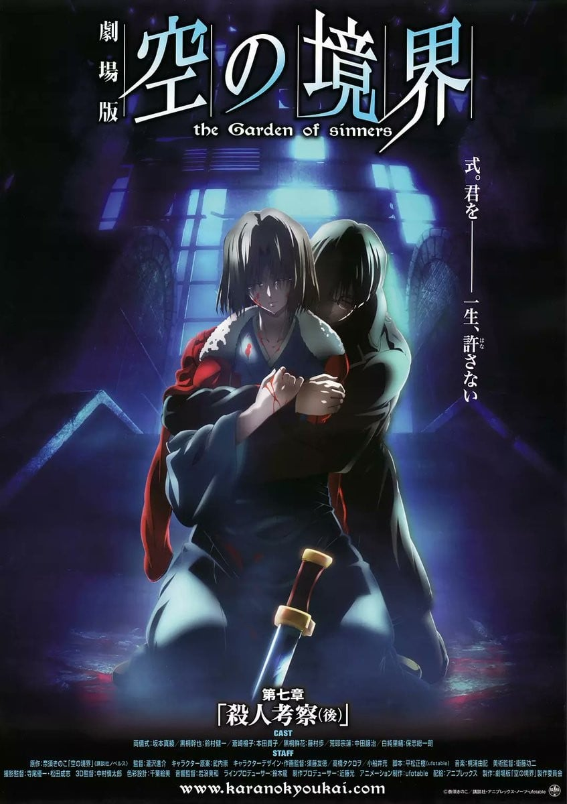
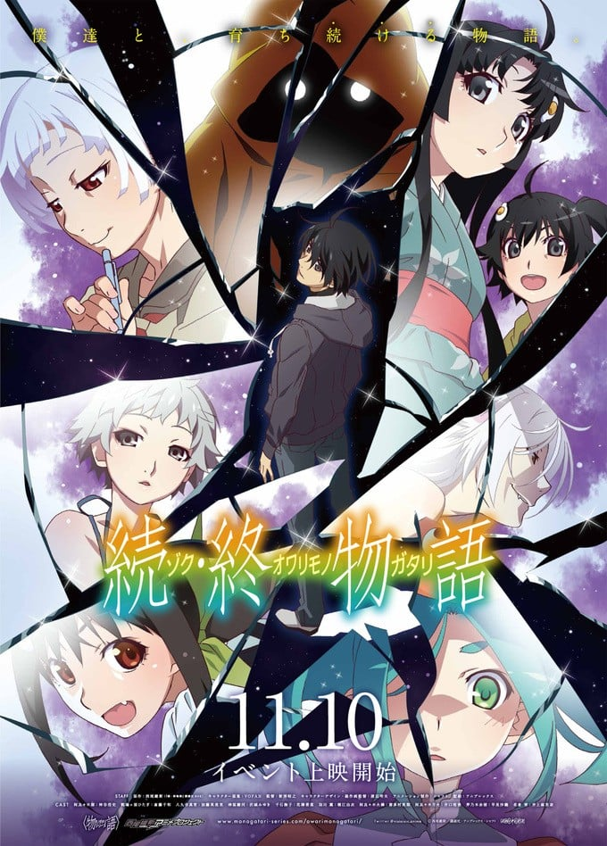

题材交叉
既在「高分恋爱动漫推荐」，也在「高分校园动漫推荐」。
「终物语」（2015）是一部TV，由板村智幸执导，制作SHAFT，类型包括奇幻、校园、恋爱，评分7.8，在本站出现在6份片单中，例如高分恋爱动漫推荐、高分校园动漫推荐、高分悬疑推理动漫。页面只做片单对照，不提供播放。高三的十月下旬，神原骏河向高中三年级的阿良良木历介绍一位转校生——忍野扇。放学后，忍野扇开始说一些奇怪的事情。她曾转学过很多次，并将每一次到过的校舍都画成地图。他发现三楼的视听室被拉长，也许有隐藏的房间。扇和历发现隐藏的房间，进去之后里面停。
按共享片单数排序，用来找和「终物语」一起出现的高分动漫。

7.8
7.9
8.0
7.9